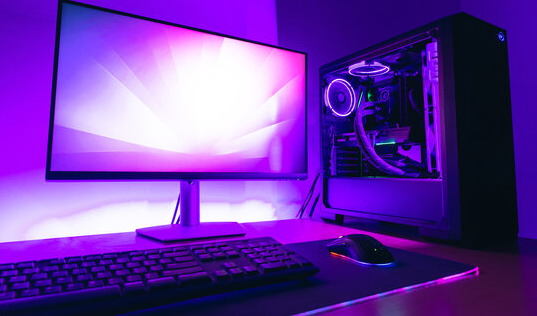

Dnešní uživatelé se rozdělují na konzumenty, kteří kupují hotové produkty. Jiní si chtějí počítač sestavit podle vlastních parametrů. Např. jim záleží na grafické kartě, chladiči. A také na vlastním RGB podsvícení. Sestavení může být také koníčkem. Ale dnešní doba přináší různé úskalí.
Allegro přesunulo CZC na své stránky 26. září 2024, což vzbudilo velkou pozornost mezi zákazníky obou platforem. Tento krok umožnil propojení nabídky zboží a služeb obou e-shopů, čímž se rozšířila nabídka pro uživatele Allegra. Pro stávající zákazníky CZC to znamenalo nové uživatelské rozhraní a možnost využívat věrnostní programy Allegra. Někteří zákazníci však vyjádřili obavy o ztrátu specializovaného zaměření CZC na elektroniku a IT. Na druhou stranu, integrace může přinést zjednodušení logistických procesů a výhodnější ceny. Celkový úspěch tohoto kroku bude záviset na tom, jak dobře Allegro zvládne sloučení obou značek a jejich specifických výhod.
CZC.cz byl český internetový obchod specializující se na prodej elektroniky a počítačových komponentů. Stal se jedním z největších online prodejců v Česku. Nabízel široký sortiment produktů, včetně počítačů, notebooků, mobilních telefonů, periferií a herních konzolí. Kromě běžného prodeje zajišťoval i služby, jako je sestavení počítače na míru podle specifikací zákazníka. CZC.cz také poskytoval zákaznickou podporu, záruční i pozáruční servis. CZC.cz bylo známé také svým zaměřením na hráčskou komunitu, pro kterou nabízí specializované produkty a sestavy.
Společnost CZC.cz vznikla v Sedlicích pod názvem Czech Computer s.r.o. dne 26. března 1998, založili ji manželé Josef a Ivona Matějkovi. Téhož roku společnost otevřela první pobočku v Kounické ulici v Praze 10, kde prodávala zejména počítače a počítačové komponenty a příslušenství. Na přelomu roku 1998 a 1999 byl spuštěn prodej online.
V roce 2010 společnost změnila logo a začala se prezentovat pod značkou CZC.cz namísto dosavadního Czech Computer.
V srpnu 2015 koupila skupina E-commerce Holding za 137 milionů Kč 35 % podíl v CZC.cz, v následujícím roce koupila za 615 mil. Kč zbývajících 65 %. V únoru 2017 se jediným vlastníkem stala společnost Sully system, o dva roky později přejmenovaná na Mall Group. Generální ředitelkou CZC.cz se stala Jitka Dvořáková.
V listopadu roku 2021 společnost Allegro koupila společnost Mall Group, jejíž součástí bylo i CZC.cz K 1.1.2024 zanikla společnost CZC.cz s. r. o., která byla do té doby součástí Mall Group a.s. jako samostatná společnost, kdy nastala fúze do Mall Group a. s., která se rovněž přejmenovala na Allegro Retail.
V červnu roku 2024 polský gigant Allegro oznámil, že e-shop přesune na svoji platformu a ukončí původní web 2024. Téhož měsíce proběhla také poslední kompletace vlastní počítačové setavy, pokud si o to někdo žádal.
Během letních prázdnin probíhaly gigantické výprodeje skladu, mnoho elektroniky se dalo koupit za podkupní ceny, ale s nejistotou, co bude se zárukou. Allegro tvrdí, že záruka bude probíhat stejným způsobem, jakým tomu bylo doposud. Já tomu ale nevěřím.
25. 9. 2024 nastal den D. CZC poslal hromadně e-mail svým zákazníkům, že e-shop se o den později přesune na novou platformu.
Počítač si můžete nechat sestavit na Alze. Tuto službu nabízí i Mironet. Také TSBohemia poskytuje sestavení PC na míru. Smarty se k nim nově přidal. Další možností jsou místní IT servisy. Výhodou je snadnější reklamace.
